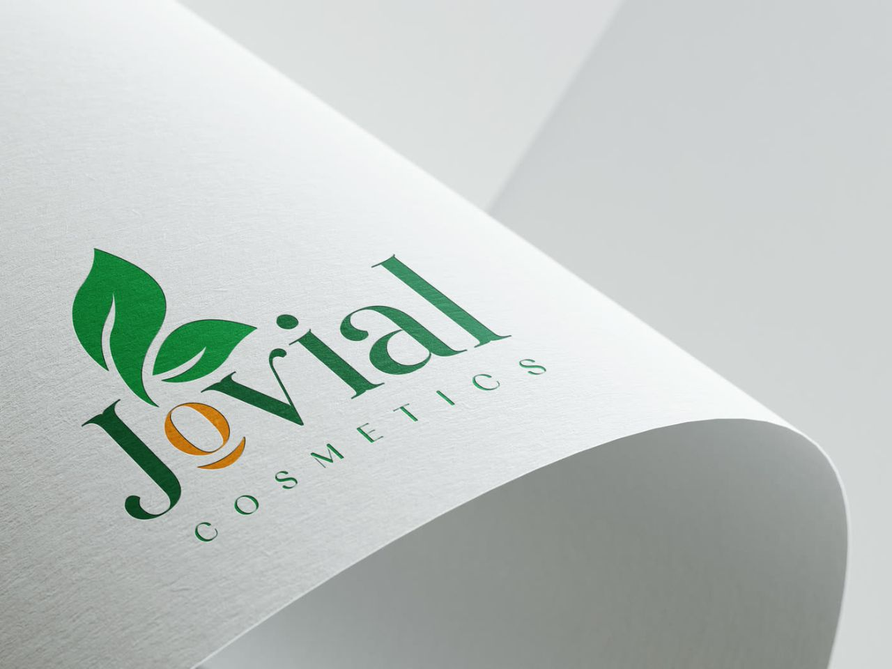

01Contexte
Jovial Cosmetics, marque de cosmétiques, souhaitait se doter d'une identité visuelle professionnelle, cohérente et facilement reconnaissable sur l'ensemble de ses supports de communication.
02Objectifs
- Créer un logo unique, lisible et facile à mémoriser
- Définir une charte graphique : couleurs, typographies et règles d'usage
- Garantir une image cohérente sur tous les supports, imprimés et numériques
03Mon rôle & les solutions
Chaque identité commence par l'écoute : comprendre l'activité, les valeurs et le public de la marque. Plusieurs pistes sont ensuite explorées, puis la plus juste est affinée jusqu'au logo final.
La charte graphique fixe les couleurs, les typographies et les règles d'utilisation, pour que la marque reste reconnaissable sur chaque support.
Le projet a été mené avec Rhema Communication. L'identité a ensuite servi de base à une série de publications éducatives sur les soins de la peau (« Connaître sa peau », « Astuces », « J'apprends »).
04Livrables
- Logo et ses déclinaisons
- Charte graphique
- Carte de visite
- Publications pour les réseaux sociaux
Vous avez un projet similaire ?
Parlons-en →